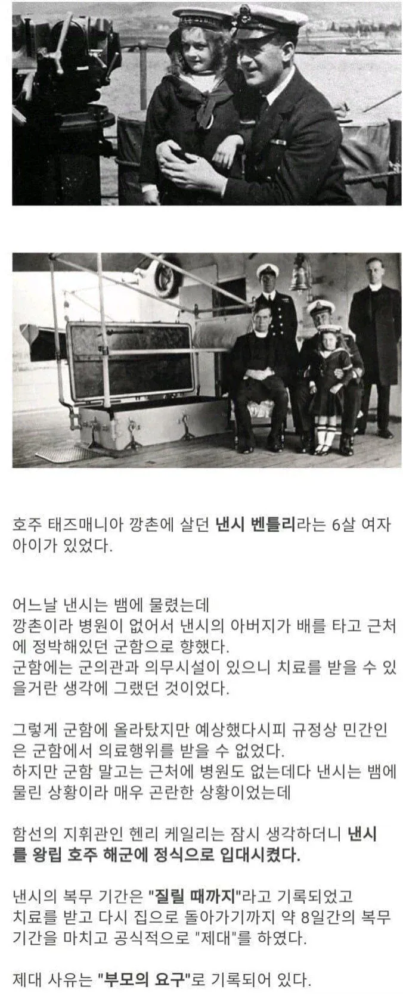

규정의 틈새 '마스코트': 당시 해군에는 장병들의 사기 진작을 위해 염소나 원숭이 같은 동물을 군함의 공식 '마스코트(Mascot)'로 등록할 수 있는 규정이 있었습니다. 함장이었던 헨리 케일리(Henry Cayley) 대령은 이 규정을 파고들어, 6살짜리 낸시를 군함의 공식 '마스코트' 계급으로 해군에 정식 입적시켜 버렸습니다.
일개 지휘관이 병을 임의로 입적시킬수 있는지 봤는데 틈새가 있넼ㅋㅋ

규정의 틈새 '마스코트': 당시 해군에는 장병들의 사기 진작을 위해 염소나 원숭이 같은 동물을 군함의 공식 '마스코트(Mascot)'로 등록할 수 있는 규정이 있었습니다. 함장이었던 헨리 케일리(Henry Cayley) 대령은 이 규정을 파고들어, 6살짜리 낸시를 군함의 공식 '마스코트' 계급으로 해군에 정식 입적시켜 버렸습니다.
일개 지휘관이 병을 임의로 입적시킬수 있는지 봤는데 틈새가 있넼ㅋㅋ
I say~
졸라 귀엽네
군필돼뿟다ㅋㅋㅋ
군필여고생 됐겠네
여자, 동물, 아기는 언제나 인기있는 대상이지
바다에 빠트리고 건져 올리는거 생각했는데 역시 배운놈들은 달라
너 몇기야
계급이 마스코트 라니 ㅋㅋ
어린 나이에 커리어를..
군필여고생이 진짜 존재하다니 ㄷㄷ
군필여초등ㄷㄷㄷ
해병대 4기 할머니 짤 생각나네 ㅋㅋ
8일동안 얼마나 이쁨받았을까
단 8일 복무인데 이미 해군 정복에 맞춘 세라복을 어디선가 공수해 입혔단 점에서 얼마나 이쁨 받았는지 알 수있음 ㅋㅋㅋ
와 어떻게 저런 어린애를
대한민국 병무청 보다 더 심각하네...............
최후의 한명까지
해군 함장은 원래 정박한 부두에서 아쎄이를 무지성 징발할 권한이 2차대전 당시까지만 해도 있긴 했음